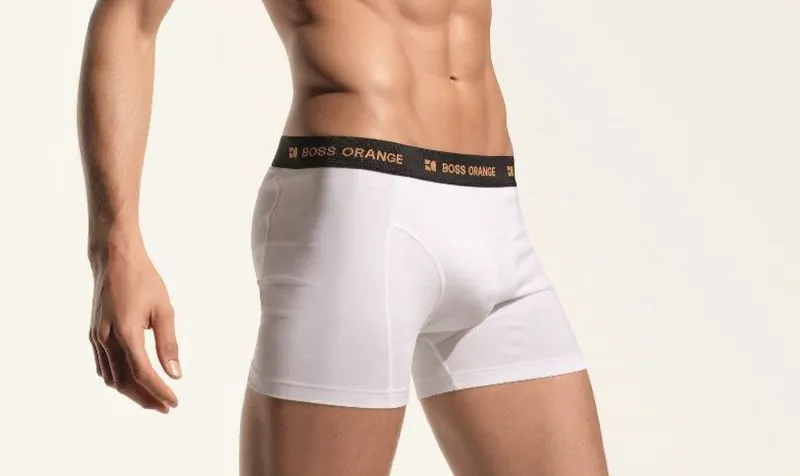

Mais Confiança Masculina
Muitos homens relatam melhora significativa na autoestima e segurança íntima após o procedimento.
Impacto na vida:
- melhora da autoconfiança
- maior segurança em relacionamentos
- melhora da autoestima
Procedimento médico moderno que melhora volume, estética e autoconfiança masculina com total discrição.
É a aplicação de ácido hialurônico no subcutâneo do pênis, feita em consultório e com anestesia local. A anestesia é feita com dois pequenos pontos com agulha de insulina; a partir daí, o procedimento é praticamente indolor. Como engordar não engrossa o pênis, o preenchimento é a forma de ganhar volume de maneira direcionada.
Sim. Na consulta, usamos um software próprio e exclusivo que, a partir da foto do paciente e com o uso de inteligência artificial, simula como ficaria o resultado. Assim você visualiza a proposta antes de decidir.
Não. Com a anestesia local, o procedimento é bem tolerado e praticamente indolor.
O ganho é em espessura. A estimativa costuma ficar entre 30% e 50% de ganho em espessura, variando de pessoa para pessoa e definida na avaliação. Pode haver uma leve projeção, mas desconfie de promessas de grande ganho de comprimento com preenchimento.
Sim. O resultado é natural tanto no olhar quanto no toque.
Não. O efeito é mais evidente em repouso; na ereção, o ganho se mantém, porém proporcionalmente menor.
O procedimento é completamente reversível com o uso de hialuronidase.
Sim. O ácido hialurônico é um produto reabsorvível pelo organismo. Os casos graves divulgados no noticiário envolvem o uso de PMMA em locais clandestinos.
O urologista é o especialista na anatomia do pênis, o que permite uma avaliação completa e um procedimento conduzido com segurança.
Em geral, de 12 a 18 meses, às vezes mais. Depois, são feitas manutenções menores.
A quantidade de produto é definida na avaliação. O resultado é visível na hora e se refina ao longo do primeiro mês. Quando indicado, o procedimento é feito em etapas, para respeitar a acomodação dos tecidos e alcançar um resultado mais harmônico e seguro.
Após cerca de 2 semanas.
Sim. Há uma revisão 21 dias após o procedimento, sem custo.
Pode, desde que não haja contraindicação identificada na avaliação.
Sim, é seguro. Cada caso é avaliado individualmente.
A escolha é feita caso a caso, entre linhas como Rennova, Juvéderm e Ilikia.
Apenas o nome comercial da clínica.
Como é um procedimento estético, nenhum convênio cobre.
Muitos homens relatam melhora significativa na autoestima e segurança íntima após o procedimento.
Impacto na vida:
A harmonização peniana pode proporcionar:
Resultados visíveis logo após o procedimento.
Tempo de duração do procedimento:
30–40 minutos
Todo o processo é feito com:
A maioria dos pacientes retorna às atividades no mesmo dia.
Sempre tive insegurança com o meu corpo, principalmente quando usava sunga, depois da Harmonização isso mudou completamente, O procedimento foi rápido, quase não doeu e eu fiquei super satisfeito com o Resultado.
Pesquisei muito antes de fazer o procedimento, e o Dr. Marco me passou confiança e me tirou todas as dúvidas.
Achei que seria complicado mas foi simples e profissional. Me senti muito bem depois da harmonização e minha esposa adorou o resultado.
